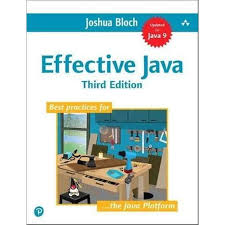
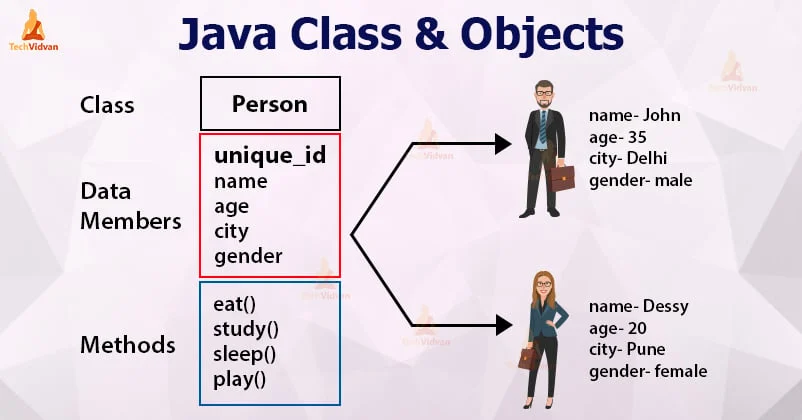
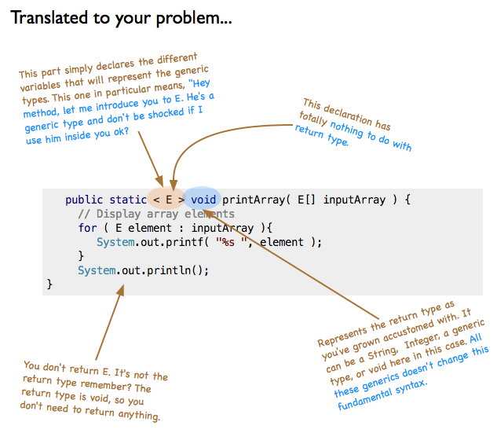
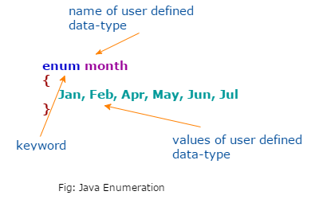
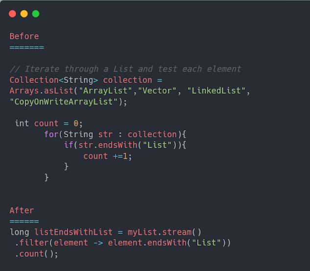
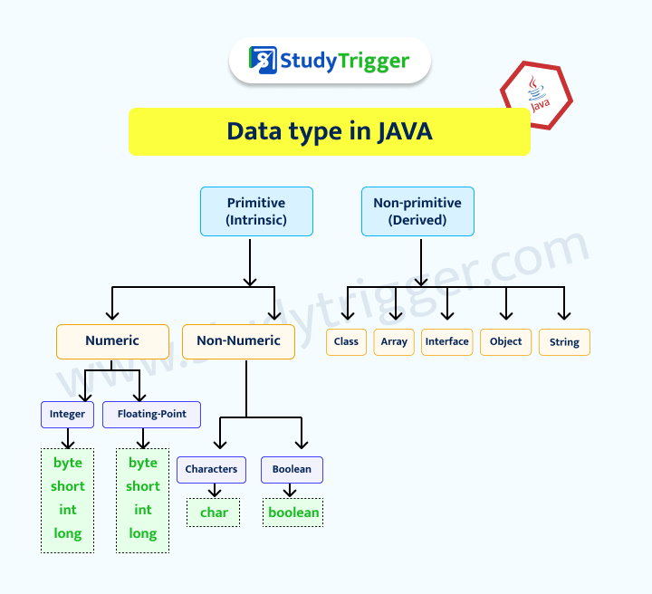
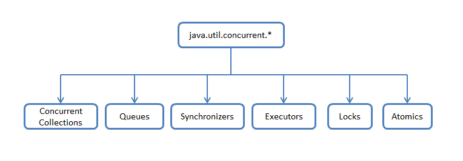
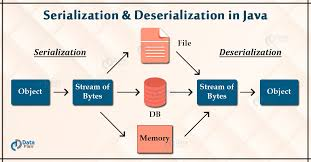

Book Information
Effective Java
Author: Joshua Bloch
Year: 2017 (3rd Edition)
Pages: 412
Rating: 4.9/5 (5,000 reviews)
Summary: Since this Jolt-award winning classic was last updated in 2008, the Java programming environment has changed dramatically. Java 7 and Java 8 introduced new features and functions including, forEach() method in Iterable interface, default and static methods in Interfaces, Functional Interfaces and Lambda Expressions, Java Stream API for Bulk Data Operations on Collections, Java Time API, Collection API improvements, Concurrency API improvements, and Java IO improvements. In this new edition of Effective Java, Bloch explores new design patterns and language idioms that have been introduced since the second edition was released in 2008 shortly after Java SE6, including Lambda, streams, generics and collections, as well as selected Java 9 features. As in previous editions, each chapter consists of several “items” presented in the form of a short, standalone essay that provides specific advice, insight into Java platform subtleties, and updated code examples. The comprehensive descriptions and explanations for each item illuminate what to do, what not to do, and why. Updated techniques and best practices on classic topics, including objects, classes, libraries, methods, and serialization How to avoid the traps and pitfalls of commonly misunderstood subtleties of the language Focus on the language and its most fundamental libraries: java.lang, java.util, and, to a lesser extent, java.util.concurrent and java.io
Table of Contents
- Chapter 1: Introduction
- Chapter 2: Creating and Destroying Objects
- Chapter 3: Methods Common to All Objects
- Chapter 4: Classes and Interfaces
- Chapter 5: Generics
- Chapter 6: Enums and Annotations
- Chapter 7: Methods
- Chapter 8: General Programming
- Chapter 9: Exceptions
- Chapter 10: Concurrency
- Chapter 11: Serialization
Chapter 1: Introduction
THIS book is designed to help you make effective use of the Java programming language and its fundamental libraries: java.lang, java.util, and java.io, and subpackages such as java.util.concurrent and java.util.function. Other libraries are discussed from time to time. This book consists of ninety items, each of which conveys one rule. The rules capture practices generally held to be beneficial by the best and most experienced programmers. The items are loosely grouped into eleven chapters, each covering one broad aspect of software design. The book is not intended to be read from cover to cover: each item stands on its own, more or less. The items are heavily cross-referenced so you can easily plot your own course through the book.

Chapter 2: Creating and Destroying Objects
THIS chapter concerns creating and destroying objects: when and how to create them, when and how to avoid creating them, how to ensure they are destroyed in a timely manner, and how to manage any cleanup actions that must precede their destruction
Chapter 3: Methods Common to All Objects
ALTHOUGH Object is a concrete class, it is designed primarily for extension. All of its nonfinal methods (equals, hashCode, toString, clone, and finalize) have explicit general contracts because they are designed to be overridden. It is the responsibility of any class overriding these methods to obey their general con- tracts; failure to do so will prevent other classes that depend on the contracts (such as HashMap and HashSet) from functioning properly in conjunction with the class. This chapter tells you when and how to override the nonfinal Object methods. The finalize method is omitted from this chapter because it was discussed in Item 8. While not an Object method, Comparable.compareTo is discussed in this chapter because it has a similar character.

Chapter 4: Classes and Interfaces
CLASSES and interfaces lie at the heart of the Java programming language. They are its basic units of abstraction. The language provides many powerful elements that you can use to design classes and interfaces. This chapter contains guidelines to help you make the best use of these elements so that your classes and interfaces are usable, robust, and flexible.

Chapter 5: Generics
SINCE Java 5, generics have been a part of the language. Before generics, you had to cast every object you read from a collection. If someone accidentally inserted an object of the wrong type, casts could fail at runtime. With generics, you tell the compiler what types of objects are permitted in each collection. The compiler inserts casts for you automatically and tells you at compile time if you try to insert an object of the wrong type. This results in programs that are both safer and clearer, but these benefits, which are not limited to collections, come at a price. This chap- ter tells you how to maximize the benefits and minimize the complications.
Chapter 6: Enums and Annotations
JAVA supports two special-purpose families of reference types: a kind of class called an enum type, and a kind of interface called an annotation type. This chap- ter discusses best practices for using these type families.
Chapter 7: Lambdas and Streams
In Java 8, functional interfaces, lambdas, and method references were added to make it easier to create function objects. The streams API was added in tandem with these language changes to provide library support for processing sequences of data elements. In this chapter, we discuss how to make best use of these facilities
Chapter 8: General Programming
THIS chapter is devoted to the nuts and bolts of the language. It discusses local variables, control structures, libraries, data types, and two extralinguistic facilities: reflection and native methods. Finally, it discusses optimization and naming conventions.
Chapter 9: Exceptions
WHEN used to best advantage, exceptions can improve a program's readability, reliability, and maintainability. When used improperly, they can have the opposite effect. This chapter provides guidelines for using exceptions effectively.

Chapter 10: Concurrency
THREADS allow multiple activities to proceed concurrently. Concurrent pro- gramming is harder than single-threaded programming, because more things can go wrong, and failures can be hard to reproduce. You can't avoid concurrency. It is inherent in the platform and a requirement if you are to obtain good performance from multicore processors, which are now ubiquitous. This chapter contains advice to help you write clear, correct, well-documented concurrent programs.
Chapter 11: Serialization
THIS chapter concerns object serialization, which is Java’s framework for encoding objects as byte streams (serializing) and reconstructing objects from their encodings (deserializing). Once an object has been serialized, its encoding can be sent from one VM to another or stored on disk for later deserialization. This chapter focuses on the dangers of serialization and how to minimize them.
